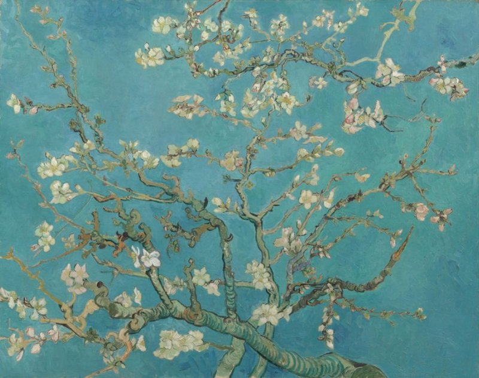

杏花 Almond Blossom
梵高 · 1890年2月 · 阿姆斯特丹梵高博物馆（文森特·梵高基金会）
Vincent van Gogh · February 1890 · Van Gogh Museum, Amsterdam (Vincent van Gogh Foundation)
图片：梵高博物馆，公有领域 / Image: Van Gogh Museum, public domain

发现 · Discover
早春的花 Early spring
杏树在早春开花，比其他树都早，所以象征新生命。
Almond trees flower early in spring, before most others, which makes them a symbol of new life.
蓝天 The blue sky
蓝天下大枝的开花树枝，是梵高最喜欢的题材之一。
Large blossoming branches against a blue sky were one of Van Gogh's favourite subjects.
日本版画 Japanese prints
画的题材、粗重的轮廓线和树枝在画面中的位置，都借鉴了日本版画。
The subject, the bold outlines and the position of the branches in the picture were all borrowed from Japanese printmaking.
一份礼物 A gift
这幅画是送给弟弟提奥和弟媳乔的礼物，庆祝他们的儿子出生。
The painting was a gift for his brother Theo and sister-in-law Jo, to celebrate the birth of their son.
用你的名字 Named after you
提奥在报喜的信里写道：“我们说过，会用你的名字给他命名。”这个孩子就叫文森特·威廉。
In the letter announcing the birth, Theo wrote: "As we told you, we'll name him after you." The baby was called Vincent Willem.
看不见树干 No trunk
画里只有树枝和花，看不到树干，就像我们正站在树下往上看。
There are only branches and blossom, no trunk, as if we are standing under the tree, looking up.
故事 · The story
ACT I 第一幕 · 一个新生命 A new life
1890年初，提奥和乔的儿子出生了，他们用哥哥的名字给他取名文森特。提奥在信里写道：“我希望他能像你一样坚定、勇敢。”
In early 1890, Theo and Jo's son was born, and they named him Vincent after his uncle. Theo wrote: "I'm making the wish that he may be as determined and as courageous as you."
1890年2月 · 阿姆斯特丹梵高博物馆 / February 1890 · Van Gogh Museum, Amsterdam
ACT II 第二幕 · 一枝杏花 A blossoming branch
那年2月，在圣雷米，梵高画下了这枝开花的杏树，作为送给他们的礼物。杏树在早春开花，象征新生命。
That February, in Saint-Rémy, Van Gogh painted this blossoming almond branch as a gift for them. Almond trees flower in early spring, a symbol of new life.
1890年2月 · 阿姆斯特丹梵高博物馆 / February 1890 · Van Gogh Museum, Amsterdam
ACT III 第三幕 · 留在家里的画 Kept in the family
这幅画一直是梵高家人心里最珍爱的一幅。后来，那个孩子文森特·威廉创办了梵高博物馆。
It remained the painting closest to the hearts of the Van Gogh family. That baby, Vincent Willem, went on to found the Van Gogh Museum.
1890年2月 · 阿姆斯特丹梵高博物馆 / February 1890 · Van Gogh Museum, Amsterdam
我希望他能像你一样坚定、勇敢。 I'm making the wish that he may be as determined and as courageous as you.
作品档案 · Artwork record
| 画家（生卒年） · Artist (dates) | 文森特·梵高（1853–1890） / Vincent van Gogh (1853–1890) |
|---|---|
| 画名 · Title | 杏花 / Almond Blossom |
| 年份 · Date | 1890年2月，圣雷米 / February 1890, Saint-Rémy |
| 材质 · Medium | 布面油画 / Oil on canvas |
| 尺寸 · Dimensions | 73.3 × 92.4 cm |
| 收藏地 · Collection | 阿姆斯特丹梵高博物馆（文森特·梵高基金会） / Van Gogh Museum, Amsterdam (Vincent van Gogh Foundation) |
关于画家 · About the artist
文森特·梵高（1853–1890），荷兰画家。他将近27岁才开始画画，短短十年留下了大量作品。1888年他来到法国南部的阿尔勒，在那里画出了许多最著名的画。
Vincent van Gogh (1853–1890) was a Dutch painter. He began painting at around 27 and left a huge body of work in just ten years. In 1888 he moved to Arles in the south of France, where he painted many of his best-known works.
更多梵高的画 · More by Vincent van Gogh